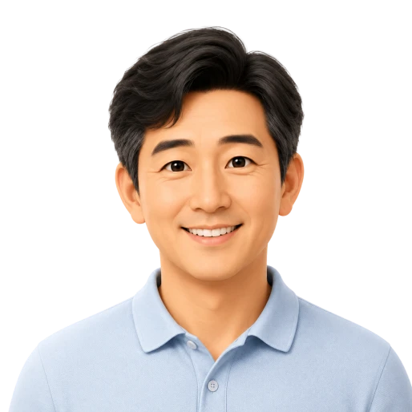

A채권사 · 채권관리팀
회수 가능성을 검토하기 전에 확인해야 할 자산 신호가 빨라졌습니다.
연체 계정별 부동산 보유 여부와 권리 리스크를 먼저 확인해, 담당자가 집중해야 할 회수 후보를 빠르게 추렸습니다.
H채권사 · NPL 검토팀
담보 여력과 권리관계를 먼저 보고 케이스 우선순위를 정할 수 있었습니다.
매입 검토 단계에서 소유 신호와 압류 가능성을 함께 확인해 실익이 낮은 건을 초기에 제외했습니다.
K채권관리 · 현장추심팀
무작정 연락하기보다 검토 가치가 있는 건부터 정리하는 데 도움이 됐습니다.
담당자 배정 전에 고객별 자산 단서를 확인해 현장 확인이 필요한 대상을 명확히 구분했습니다.
D신용정보 · 조사팀
조회 결과를 바탕으로 다음 조사 방향을 빠르게 좁힐 수 있었습니다.
기본 인적 정보에서 부동산 보유 가능성을 먼저 확인하고 추가 조사 범위를 효율적으로 설계했습니다.

B법무법인 · 송무팀
소송 전 검토 단계에서 부동산 보유 여부를 확인하는 시간이 줄었습니다.
청구 실익을 판단하기 전 필요한 기초 자산 신호를 빠르게 정리해 의뢰인 안내 속도가 좋아졌습니다.
L법무법인 · 집행팀
강제집행 가능성을 판단하기 전 필요한 기초 자료가 한눈에 정리됐습니다.
집행 검토 단계에서 소유 현황과 권리 리스크를 함께 보며 후속 절차의 우선순위를 세웠습니다.
Y법률사무소 · 채권소송팀
채무자별 후속 조치 우선순위를 정하는 기준이 더 분명해졌습니다.
소송 진행 전후로 자산 보유 단서를 확인해 합의, 집행, 추가 조사 중 어떤 액션을 먼저 할지 정리했습니다.
C카드사 · 리스크관리팀
연체 고객군을 나눠 후속 대응 전략을 세우는 데 활용하고 있습니다.
고객군별 자산 신호를 참고해 상담, 조정, 법적 절차 검토 대상을 더 체계적으로 분류했습니다.
M캐피탈 · 여신관리팀
심사 이후 관리 단계에서 부동산 자산 신호를 보조 지표로 쓸 수 있었습니다.
계약 이후 변동 리스크를 점검할 때 소유 현황 단서를 함께 확인해 사후관리 기준을 보완했습니다.
P캐피탈 · 회수전략팀
계정별 회수 가능성을 빠르게 분류해 담당자 배정이 쉬워졌습니다.
월별 관리 대상 중 우선 검토가 필요한 계정을 골라내고, 담당자별 업무량을 더 균형 있게 나눴습니다.
R저축은행 · 여신심사팀
대출 검토 전 고객의 기초 자산 상황을 파악하는 흐름이 단순해졌습니다.
심사 자료를 받기 전 단계에서 부동산 보유 신호를 확인해 상담 준비와 추가 요청 항목을 줄였습니다.
S금융사 · 사후관리팀
사후 모니터링 대상자를 정리할 때 참고할 수 있는 기준이 생겼습니다.
정기 점검 대상 중 자산 신호가 있는 고객을 먼저 확인해 관리 리포트의 우선순위를 조정했습니다.
T탐정사무소 · 민사조사팀
의뢰 건의 실익을 검토할 때 부동산 보유 신호가 중요한 판단 자료가 됐습니다.
조사 착수 전 확인 가능한 자산 단서를 기준으로 의뢰 범위와 예상 소요 시간을 더 현실적으로 안내했습니다.
Q조사법인 · 재산조사팀
기초 정보만으로 조사 방향을 먼저 세울 수 있어 불필요한 확인이 줄었습니다.
반복적으로 확인하던 후보 정보를 줄이고, 실제 후속 확인이 필요한 대상에 조사 시간을 집중했습니다.
F보험GA · 지점장
상속·증여 상담 가능성이 있는 고객을 먼저 선별하는 데 도움이 됐습니다.
담당 설계사들이 고액 상담 후보를 같은 기준으로 분류하면서 지점 차원의 상담 배정이 쉬워졌습니다.
W재무설계법인 · VIP상담팀
고액 상담 대상을 구분하면서 상담 준비의 밀도가 높아졌습니다.
고객별 자산 신호를 미리 확인해 제안서 방향과 상담 질문을 더 구체적으로 준비했습니다.
N프랜차이즈본사 · 가맹개발팀
창업 문의 중 실제 자금 여력이 있는 고객을 초기에 가늠할 수 있었습니다.
초기 상담 전에 담보력과 자산 보유 신호를 확인해 가맹 상담의 우선순위를 빠르게 정리했습니다.
E분양대행사 · 상업시설팀
단순 문의와 계약 가능 고객을 구분해 미팅 일정을 더 효율적으로 잡았습니다.
분양 문의자 중 실질 검토 가능성이 높은 대상을 먼저 선별해 현장 방문과 상담 일정을 조정했습니다.
G기업영업팀 · B2B 세일즈
담당자별 감에 의존하던 리드 판단을 같은 기준으로 정리할 수 있었습니다.
리드별 자산 신호를 CRM 메모와 함께 관리해 팀 회의에서 우선순위를 더 명확히 공유했습니다.
J솔루션도입팀 · CRM운영
조회 결과를 내부 고객관리 흐름에 연결하는 방식까지 함께 검토할 수 있었습니다.
API 연동 범위와 관리자 화면 구성을 함께 검토하며 기존 고객관리 프로세스에 맞는 도입안을 만들었습니다.